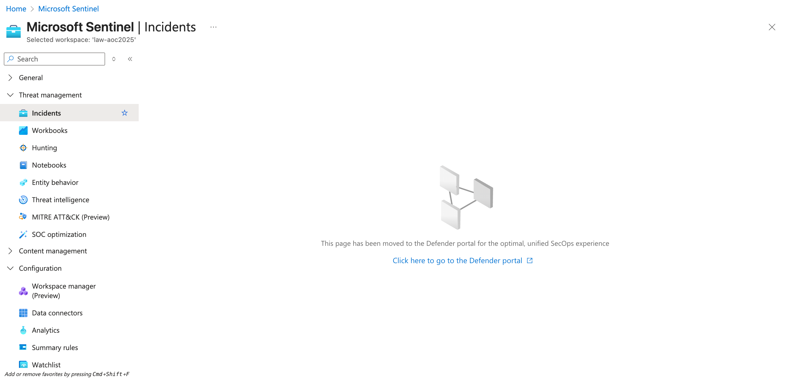

Now that we have learned about triaging, let's move to the fun part, working inside the actual SOC environment of the Best Festival Company hosted in Azure. This is where McSkidy will put her triage skills to the test using Microsoft Sentinel, a cloud-native SIEM and SOAR platform. Sentinel collects data from various Azure services, applications, and connected sources to detect, investigate, and respond to threats in real time.
Through Sentinel, McSkidy can view and manage alerts, analyse incidents, and correlate activities across multiple logs. It provides visibility into what's happening within the Azure tenant and efficiently allows analysts to pivot from one alert to another. In this next part, we'll explore how McSkidy reviews alerts, drills into the evidence, and uses Sentinel's investigation tools to uncover the truth behind the Evil Bunnies' attack.
To start the activity, navigate to Microsoft Sentinel and select your dedicated Sentinel instance. Then, under the Threat management dropdown, select the Incidents tab to view the incidents triggered during the current timeframe. You may also press the << button to expand the view as shown in the image below.
Note: In case the alerts do not appear, refresh your browser page (see image below) 
Note 2: In case you see no incidents, ensure you have set a custom date range for the incidents:
From the task images, there are eight open incidents, four of high severity and four of medium severity. Note that these numbers might differ in your lab environment.
Since we focus on addressing the most critical threats first, we’ll begin with the high-severity alerts. These represent potential compromise points or privilege-escalation activities that could lead to complete host control if left unchecked.
To begin the triage, we’ll examine one high-severity incident in detail: the Linux PrivEsc—Kernel Module Insertion alert. By clicking the alert, additional details appear on the right-hand side.
Linux is a command line operating system based on unix. There are multiple operating systems that are based on Linux.
Upon checking the alert, as seen in the above image, the following details can be initially inferred:
We can get further details from here by clicking the View full details button.
In the new view, we can see that in addition to the details shown in the summary, we can also view the possible Incident Timeline and Similar Incidents.
From the view above, you may notice that several alerts point to the same affected entities. This helps us understand the relationship and the possible sequence of events that impact the same host or user.
When multiple alerts are linked to a single entity, such as the same machine, user, or IP address, it typically indicates that these detections are not isolated incidents, but somewhat different stages of the same intrusion.
By analysing which alerts share the same entities, we can start to trace the attack path, from the initial access to privilege escalation and persistence.
Malware often tries to keep a footprint in the system such that it keeps running even after a system restart. This is called persistence. For example, If a malware adds itself to the startup registry keys, it will persist even after a system restart.
For example, if the same VM (Virtual Machine) triggered the following alerts:
| Alert | What does it suggest? |
|---|---|
| Root SSH Login from External IP | The attacker gained remote access (via SSH) to the system (Initial Access) |
| SUID Discovery | The attacker looked for ways to escalate privileges. |
| Kernel Module Insertion | The attacker installed a malicious kernel module for persistence. |
Secure Shell (SSH) refers to a cryptographic network protocol used in secure communication between devices. SSH encrypts data using cryptographic algorithms, such as Advanced Encryption System (AES) and is often used when logging in remotely to a computer or server.
At this stage, McSkidy has reviewed the high-severity alerts, identified the affected entities, and noticed that several detections are linked together. This initial triage allows her to prioritise which incidents need immediate attention and recognise when multiple alerts are actually part of a larger compromise.
With this foundational understanding, McSkidy is ready to move beyond surface-level triage and dive deeper into the underlying logs, which will be discussed in the next task.